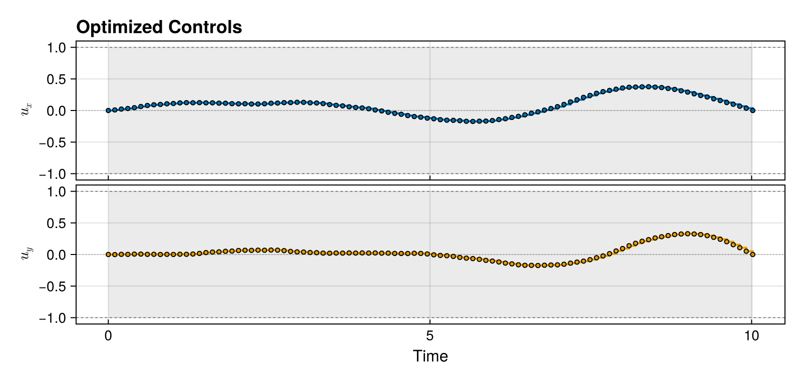
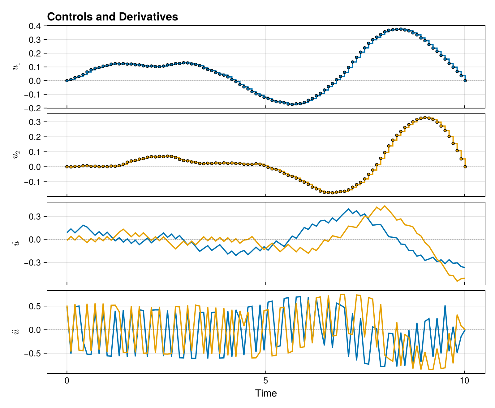

Your First Gate
This tutorial walks through synthesizing your first quantum gate with Piccolo.jl. We'll implement an X gate (NOT gate) on a single qubit.
What We're Doing
We want to find control pulses that implement:
\[X = \begin{pmatrix} 0 & 1 \\ 1 & 0 \end{pmatrix}\]
Our qubit has Hamiltonian:
\[H(t) = \frac{\omega}{2}\sigma_z + u_x(t)\sigma_x + u_y(t)\sigma_y\]
The optimizer will find $u_x(t)$ and $u_y(t)$ that produce the X gate.
Setup
First, load the required packages:
using Piccolo
using CairoMakie
using Random
Random.seed!(42) # For reproducibilityRandom.TaskLocalRNG()Step 1: Define the Quantum System
A QuantumSystem needs:
- Drift Hamiltonian: Always-on terms (qubit frequency)
- Drive Hamiltonians: Controllable interactions
- Drive bounds: Maximum control amplitudes
# The drift Hamiltonian: ω/2 σ_z (qubit frequency)
# We set ω = 1.0 for simplicity
H_drift = 0.5 * PAULIS[:Z]
# The drive Hamiltonians: σ_x and σ_y controls
H_drives = [PAULIS[:X], PAULIS[:Y]]
# Maximum amplitude for each drive (in same units as H_drift)
drive_bounds = [1.0, 1.0]
# Create the system
sys = QuantumSystem(H_drift, H_drives, drive_bounds)QuantumSystem: levels = 2, n_drives = 2Let's check what we created:
sys.levels, sys.n_drives(2, 2)Step 2: Create an Initial Pulse
We need an initial guess for the control pulse. ZeroOrderPulse represents piecewise constant controls - the standard choice for most problems.
# Gate duration and discretization
T = 10.0 # Total time (in units where ω = 1)
N = 100 # Number of knot points
# Time vector
times = collect(range(0, T, length = N))
# Random initial controls (small amplitude)
# Shape: (n_drives, N) = (2, 100)
initial_controls = 0.1 * randn(2, N)
# Create the pulse
pulse = ZeroOrderPulse(initial_controls, times)ZeroOrderPulse
drives: 2
duration: 10.0Check the pulse:
duration(pulse)10.0n_drives(pulse)2pulse(5.0)2-element Vector{Float64}:
0.036820693581548374
-0.004656094092083756Step 3: Define the Goal
A UnitaryTrajectory combines the system, pulse, and target gate.
# Our target: the X gate
U_goal = GATES[:X]
U_goal
# Create the trajectory
qtraj = UnitaryTrajectory(sys, pulse, U_goal)UnitaryTrajectory
system: 2-level QuantumSystem
drives: ZeroOrderPulse with 2 drives
duration: 10.0Step 4: Set Up the Optimization Problem
SmoothPulseProblem creates an optimization problem with:
- Fidelity objective (weight
Q) - Control regularization (weight
R) - Smoothness via derivative bounds
By default each timestep $\Delta t_k$ is an independent variable, so the optimizer is free to choose a non-uniform time grid. Here we want the fixed, evenly-spaced grid we defined above, so we set timesteps_all_equal = true via PiccoloOptions to constrain every $\Delta t_k$ to be equal.
qcp = SmoothPulseProblem(
qtraj,
N;
Q = 100.0, # Fidelity weight (higher = prioritize fidelity)
R = 1e-2, # Regularization weight (higher = smoother controls)
ddu_bound = 1.0, # Limit on control acceleration
piccolo_options = PiccoloOptions(timesteps_all_equal = true),
)QuantumControlProblem
├─ UnitaryTrajectory · ZeroOrderPulse · BilinearIntegrator, DerivativeIntegrator, DerivativeIntegrator
│
├─ System
│ dim=2 drives=2
│
├─ Trajectory
│ N=100 T=10.000 Δt∈[0, Inf]
│ Ũ⃗ (8) ±[1.0, 1.0, 1.0, … (8 total)] ✓ state
│ Δt (1) [0.0, Inf] ✓ timestep
│ t (1) · state
│ u (2) ±[1.0, 1.0] ✓ control
│ du (2) · control
│ ddu (2) ±[1.0, 1.0] ✓ control
│
├─ Goal
│ U_goal (2×2)
│
├─ Objective total = 152.8 @ current x
│ KnotPointObjective w=1 99.88
│ QuadraticRegularizer(:u) w=1 9.663e-04
│ QuadraticRegularizer(:du) w=1 0.1911
│ QuadraticRegularizer(:ddu) w=1 52.75
│ NullObjective w=1 0
│
├─ Constraints 1/14 violated at x₀
│ [dyn] BilinearIntegrator ✗ (‖c‖∞ = 9.897e-03)
│ [dyn] DerivativeIntegrator ✓ (‖c‖∞ = 2.776e-17)
│ [dyn] DerivativeIntegrator ✓ (‖c‖∞ = 4.441e-16)
│ [ineq] AllEqualConstraint ✓ (no eval)
│ [eq] EqualityConstraint ✓ (no eval)
│ [eq] EqualityConstraint ✓ (no eval)
│ [eq] EqualityConstraint ✓ (no eval)
│ [bnd] BoundsConstraint ✓
│ [bnd] BoundsConstraint ✓
│ [bnd] BoundsConstraint ✓
│ [bnd] BoundsConstraint ✓
│ [bnd] BoundsConstraint ✓
│ [eq] TimeConsistencyConstraint ✓ (no eval)
│ [eq] EqualityConstraint ✓ (no eval)
│
└─ Status
variables: 1600 (1200 bounded)
equality: 117617
inequality: 1
F (raw) = 0.001190
Hint: show_problem(qcp; detail=:full) for pulse plot + sparsity
Step 5: Solve!
The solve! function runs the optimizer:
solve!(qcp; max_iter = 20, verbose = false, print_level = 1)Step 6: Analyze the Results
First, check the fidelity:
fidelity(qcp)0.9999866890455802Get the optimized trajectory:
traj = get_trajectory(qcp)
# Check the final unitary
U_final = iso_vec_to_operator(traj[:Ũ⃗][:, end])
round.(U_final, digits = 3)2×2 Matrix{ComplexF64}:
0.003+0.003im -0.001+1.0im
0.001+1.0im 0.003-0.003imStep 7: Visualize
Piccolo's plot_pulse renders the optimized controls straight from the problem — no manual axis wrangling required. Passing bounds = true shades each drive's amplitude limits so you can see how close the solution sits to the hardware constraints, and labels ties each channel back to its Hamiltonian term.
plot_pulse(qcp; bounds = true, labels = ["u_x", "u_y"], title = "Optimized Controls")
Want to see the smoothness the regularizer enforced? Stack the control velocity ($\dot{u}$) and acceleration ($\ddot{u}$) under the pulse:
plot_pulse(qcp; components = [:du, :ddu], title = "Controls and Derivatives")
Understanding the Solution
The optimizer found control pulses that:
- Start and end smoothly (due to derivative regularization)
- Stay within bounds (due to drive_bounds)
- Achieve high fidelity (due to the Q-weighted objective)
The X gate rotates the qubit state around the X-axis by π radians. You can see the controls create the right rotation!
Step 8: Save the Optimized Pulse
Optimized pulses are valuable — save them so you can reload them later for warm-starting, analysis, or hardware deployment.
optimized_pulse = get_pulse(qcp.qtraj)
save("x_gate_pulse.jld2", optimized_pulse)Reload later and continue optimizing:
saved_pulse = load_pulse("x_gate_pulse.jld2")
qtraj_warm = UnitaryTrajectory(sys, saved_pulse, GATES[:X])
qcp_warm = SmoothPulseProblem(qtraj_warm, N; Q=1000.0)
solve!(qcp_warm; max_iter=50) # converges faster from a good starting pointSee the Saving and Loading Pulses guide for more details.
What's Next?
Now that you've synthesized your first gate, try:
- Different gates: Change
U_goaltoGATES[:H](Hadamard) orGATES[:T] - Faster gates: Reduce
Tand see how fidelity changes - Smoother pulses: Increase
Ror decreaseddu_bound - Time-optimal: Add
Δt_boundsand useMinimumTimeProblem - Save and reload: Use Saving and Loading Pulses to build on your results
Continue to the State Transfer tutorial to learn about preparing specific quantum states.
This page was generated using Literate.jl.